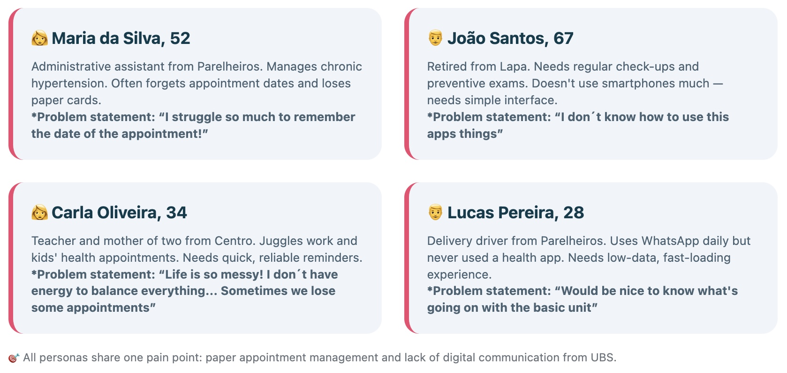

Brazil has one of the largest public health systems in the world — and one of its biggest blind spots is communication. My SUS is an app designed to bridge the gap between primary health units (UBS) and the communities they serve, reducing missed appointments and strengthening community health engagement.
Role: UX Researcher, UX Designer, Frontend Developer
Tools: Figma, v0, Claude AI, VS Code, Netlify, Google Forms
Duration: 3 weeks — Maven UX for Healthcare Course, 2025
Prototype: mysus.netlify.app
In São Paulo, the average wait for a specialized appointment reaches 30 days. Yet according to São Paulo City Hall data, up to 37.8% of scheduled appointments are missed — not because patients don't want care, but because the system relies entirely on a paper card and the patient's memory. The SUS official ombudsman platform (OuvSUS) confirms waiting time as the top national complaint. But the real paradox uncovered in the research: high coverage does not guarantee low no-show rates. Parelheiros, with 99.4% primary care coverage, still has 37.8% primary loss — pointing directly to a communication and reminder gap, not an access gap. The problem isn't the system's reach. It's the silence between the unit and the patient.
Research combined secondary sources with field knowledge built over 7 years working inside the SUS as an occupational therapist. The data sources of the secondary research include the "OuvSUS 2024 government report" — national complaint patterns & "SIGA-SP (São Paulo City Hall)"" — appointment and no-show data by region The key insights that emerged from the research were:
Personas: Four users grounded in the data — not assumptions:

Current User Journey: Four users grounded in the data — not assumptions:
Patient receives a paper card → loses or forgets it → misses the appointment → another patient on the waiting list loses the slot. No reminders. No cancellation option. No reallocation.
*The gap across all competitors: no app combines appointment management, community activities, ombudsman access, and administrative tools in a single accessible interface designed for low-literacy, low-data users.
Version 1 — built in v0, established core flows and identified structural issues. Scope was simplified to prioritize accessibility and ease of use. Final version — rebuilt with Claude AI and VS Code, deployed on Netlify. 🔗 Live prototype: mysus.netlify.app
Methodology: Unmoderated remote usability study — 5 participants (Brazil and USA), ages 20–71, 3 Portuguese speakers / 2 English speakers. 4 tasks covering both citizen and admin profiles. Results:
What users said: "I love the accessibility, multi-language support, and dark mode. Your design is very intuitive and accommodating of diverse users." — Emma 🇺🇸 "The structure and user flow of the app are solid. Contrast control, dark mode control, and zoom were all great features." — Sophia 🇺🇸 "The app is practical and dynamic." — Maria 🇧🇷 Critical findings and fixes: Priority Issue Action P0: "Language switch bug" — one participant mention that the english didn't persist across screens. Status: Fixed ✅ P0: "Missing confirmation feedback on admin actions" — Fixed ✅ P1: "Low contrast — yellow text on white background (WCAG violation)" — Fixed ✅ Next iteration: "Calendar picker for admin event scheduling" — Recommended Next iteration: "Citizen login (email + PIN)" — Recommended
This project confirmed something I already knew from years inside the SUS: the system's biggest failures are often not clinical — they're communicational. The technology to fix them is simple. What's needed is design that truly centers the user. Building My SUS also revealed the specific complexity of healthcare UX: sensitive data, accessibility requirements, low-literacy users, and multi-stakeholder systems demand a level of rigor that generic UX projects don't. That complexity is exactly where I want to work.
Coded by Le Santana, open-sourced at Github 🤙